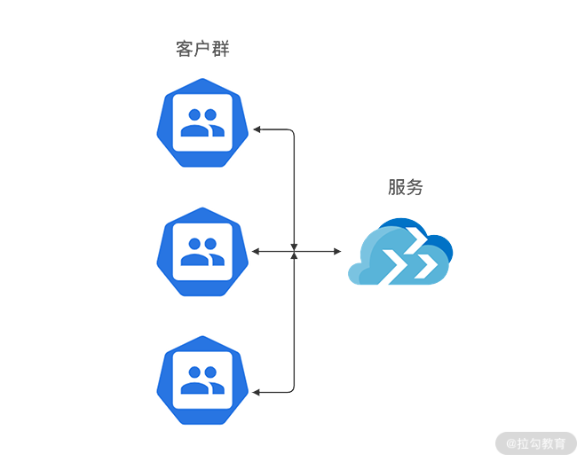

- 00 开篇词 为什么每个测试人都要学好性能测试？.md.html
- 01 JMeter 的核心概念.md.html
- 02 JMeter 参数化策略.md.html
- 03 构建并执行 JMeter 脚本的正确姿势.md.html
- 04 JMeter 二次开发其实并不难.md.html
- 05 如何基于 JMeter API 开发性能测试平台？.md.html
- 06 Nginx 在系统架构中的作用.md.html
- 07 你真的知道如何制定性能测试的目标吗？.md.html
- 08 性能测试场景的分类和意义.md.html
- 09 如何制定一份有效的性能测试方案？.md.html
- 10 命令行监控 Linux 服务器的要点.md.html
- 11 分布式服务链路监控以及报警方案.md.html
- 12 如何把可视化监控也做得酷炫？.md.html
- 13 Docker 的制作、运行以及监控.md.html
- 14 如何从 CPU 飙升定位到热点方法？.md.html
- 15 如何基于 JVM 分析内存使用对象？.md.html
- 16 如何通过 Arthas 定位代码链路问题？.md.html
- 17 如何应对 Redis 缓存穿透、击穿和雪崩？.md.html
- 18 如何才能优化 MySQL 性能？.md.html
- 19 如何根治慢 SQL？.md.html
- 20 结束语 线上全链路性能测试实践总结.md.html
- 捐赠
06 Nginx 在系统架构中的作用
通过上一模块的学习，相信你已经掌握了 JMeter 工具的核心用法和技能，并且可以在 JMeter工具使用方面游刃有余。这些内容不仅仅可以帮助你提升工作效率，而且能够通过二次开发解决团队内部的定制化需求。
这一讲我将带你认识一个常用的高性能中间件 Nginx，在正式学习该讲之前，我先跟你聊聊为什么要学习 Nginx，有一位细心的读者给我留言：
第二模块好像都是在围绕如何写一份优秀的性能方案展开，为什么有一篇关于 Nginx 的文章呢？
首先不得不说这个同学的行为很值得我们学习，通过大纲尝试去理清学习的整体架构和逻辑。
很多同学向我反馈在写方案时有一个核心痛点，即不知道如何制定性能测试的目标。都说要参考真实数据，公司也没有提供相关的查询接口，所以不清楚去哪里获取用户的访问数据。而 Nginx 作为业内最常用的代理服务器，较为详细地记录了用户的访问数据，而且在分布式部署性能优化方面也发挥了积极的作用，所以说到性能测试，Nginx 是不得不提的一个中间件。
本讲就带你学习 Nginx 在应用架构中的作用，并从性能测试角度看如何利用 Nginx 数据统计用户访问量。
Nginx 重要的两个概念
代理
首先要来解释一下什么是代理，正向代理和反向代理是什么意思？各自作用是什么？不少同学经常听到这些名词，但往往分不清楚具体区别是什么。
什么是代理？
举个例子，比如你很想到某公司去做测试，对方公司的测试主管并不认识你，你也不知道这位测试主管的联系方式，但是你的朋友小王认识，他帮你推荐了简历，此时的小王就起到代理的作用，相当于一个渠道。
正向代理
正向代理的特点是你非常清楚地知道你要去哪儿，访问什么服务器，但服务器并不关心你的出发地是哪里，它只知道你从哪个代理服务器过来。
举个例子，北京去哈尔滨的高铁班次，对于目的地哈尔滨而言，它只知道这部分人是从北京过来的，但是并不清楚这些人之前是不是先从上海或者其他地方先到北京，再转车过来。
反向代理
刚刚说了正向代理，那反向代理又是什么呢？我先来说一下应用场景，比如我们的内部服务器集群，是不可能直接暴露出来让外网访问的，这样安全风险就非常大；再比如现在很多网站为了提高性能都采用了分布式部署，通过多台服务器来缓减服务端的压力，这些都可以通过 Nginx 来完成。
那我们的外网用户如何能够访问到内部的应用呢，Nginx 可以暴露端口给外网用户访问，当接收到请求之后分发给内部的服务器，此时的 Nginx 扮演的是反向代理的角色。这样一个过程，客户端是明确的，但对于访问到哪台具体的应用服务器是不明确的。就好像一个上海飞北京的班次，可能还有很多乘客到达北京之后会去沈阳、哈尔滨等，对于出发地上海而言，这个是不关心的。
负载均衡
负载均衡是 Nginx 最重要也是最常见的功能，为什么需要负载均衡呢？你可以想一想，比如你线上只有一台应用服务器，如下图所示。

但是随着用户体量的上升，一台服务器并不能支撑现有用户的访问，那你就会考虑使用两台或者多台服务器，如下图所示：

那用户如何能够相对均匀地访问到这些服务器呢，这就需要你去了解 Nginx 的负载均衡策略，简单来说，就是 Nginx 如何分发这些请求到后面的应用服务器集群，下面我介绍下 Nginx 的三种分配策略。
（1）轮询
也就是使用平均分配的方式，将每个请求依次分配到配置的后端服务器上。除非有服务宕机，才会停止分发。如下代码所示：
upstream localhost {
//分发到各应用服务
server 127.0.0.1:7070;
server 127.0.0.1:7071;
}
server{
//Nginx核心监听端口
listen 8012;
server_name localhost;
location / {
proxy_pass http://localhost;
proxy_set_header Host $host;
proxy_set_header X-Real-IP $remote_addr;
proxy_set_header X-Forwarded-For $proxy_add_x_forwarded_for;
}
}
（2）权重
权重即配置轮询的比重，为什么需要这么配置呢？在真实的互联网场景下，很多服务器上都会配置多个应用，这样会导致每台服务器的资源占用不一致，所以在分布式部署配置下也需要注意这一点：
- 相对空闲的机器可以多配置访问比例；
- 比较繁忙的机器可以少配置一些。
如下代码所示，其中 ip1、ip2 以及 port 需要配置你实际的部署 ip 和 port。
upstream test {
server ip1:8080 weight=9;
server ip2:8081 weight=1;
}
（3）ip_hash
但上面两种配置方式在电商场景下有个很常见的问题，比如你登录了一个网站，登录信息已经保存到 a 机器，但当你做后续操作时的请求会到 b 机器，那么就获取不到你原来登录的信息，此时你就需要重新登录了。这样的情况是用户肯定不能接受的，ip_hash 模式就可以很好地解决这个问题，让每次访问能基于同一用户访问固定的服务器。
ip_hash 模式配置示例如下：
upstream test {
ip_hash;
server localhost:8080;
server localhost:8081;
}
接着我们来看下如何基于 Nginx 记录的数据去分析用户访问请求分布，在讲下文之前，按照我的习惯，我想先说一说为什么我要通过 shell 命令去分析 Nginx 日志。
首先对于测试同学而言，比较熟练地掌握了 Python 或者 Java 的用法，但对于 Linux 中的 shell 命令不是很熟悉，也有同学说 shell 能做的我觉得 Python 也可以实现。我想对于性能测试而言，处理效率是一个我们都比较关心的问题。在 Linux 服务器上，你可以处理数据的级别达到百万条以上，对于 Linux 上的文本操作而言，相对于 Python 或者 Java，shell 在处理效率方面有着得天独厚的优势，所以掌握基础的 shell 命令还是必要的。
再说我为什么会选择 Nginx 日志去分析，这也得从互联网行业的现状说起：
- 对于大型互联网公司，关于获取分析日志我想早已有平台化支持，一键就可以导出你需要的用户数据访问报表；
- 而对于中小公司的测试来说，去哪里获取可能都不是很清楚。
所以我选择了使用 Nginx 这种比较原生的方式去讲解，这样对于使用过平台化操作的同学也可以了解一些底层的逻辑操作，也让没有接触过这方面数据统计的同学掌握其中一种实现方法。
Linux 的 shell 命令
Linux 的 shell 命令常见的文本操作命令有 awk、sed、sort、wc 等，通过这些命令的熟练掌握和搭配使用，相信你可以对 Linux 服务器上的文本处理如鱼得水。
awk
awk 可以将文本中的内容按行去读取，然后将读取出来的行按照规定的分隔符去提取你所需要的内容。
awk 常用参数是 -F 指定分隔符。
比如以下代码就是以 : 为分隔符，寻找以 root 开头的行数据，打印第 7 列。
# awk -F : '/^root/{print $7}' /etc/passwd
/bin/bash
以下代码表示以 begin 开头、end 结尾，打印第 1 列数据。
代码块示例
# awk -F : 'BEGIN{print "begin"}{print $1} END{print "end"}' /etc/passwd
begin
root
..
end
Sed
Sed 是一个流编辑器，一次只能处理一行内容，需要注意的是 sed 并不改变文本本身的内容，它只是把结果存放在临时缓冲区中。
sed 常用的参数有：
- a 表示新增；
- i 表示插入；
- c 表示取代；
- d 表示删除。
举个例子，我们设置一个文本文件，每行只有一个数字，如下所示：
[root@JD data]# cat sed.txt
1
2
3
在第一行下新增 4：
[root@JD data]# sed '1a 4' sed.txt
1
4
2
3
看下原来的文本，你会发现没有任何改动，如下代码所示：
[root@JD data]# cat sed.txt
1
2
3
Sort
Sort 的默认方式就是把第一列根据 ASCII 值排序输出。常用参数有：
- -n，依照数值的大小排序；
- -r，以相反的顺序来排序；
- -k，选择以某个区间进行排序。
举个简单的示例，将上述的 sed.txt 倒序输出，如下代码所示：
[root@JD data]# sort -r sed.txt
3
2
1
uniq
uniq 用于检查或者统计文本出现的重复行，常用参数是 -c，它用于连续重复行次数的统计。
我们构造一个 uniq.txt，如下所示：
[root@JD data]# cat uniq.txt
hello
hello
cctester
cctester
cctester
com
然后对 uniq.txt 进行重复数据统计，并根据重复次数由大到小排序，如下所示：
[root@JD data]# uniq -c uniq.txt |sort -r
3 cctester
2 hello
1 com
学完了这些基础命令，我带你来看 Nginx 日志分析，如果你不清楚你的 Nginx 日志地址，查看nginx.conf 文件的配置即可，指定日志路径如下所示：
access_log /data/logs/access.log main;
其中部分的日志显示，如下所示：
120.204.101.238 - - [29/Nov/2020:14:19:39 +0800] "GET /hello/map HTTP/1.1" 200 202
47.92.11.105 - - [29/Nov/2020:14:19:39 +0800] "GET /hello/map HTTP/1.1" 200 202
185.39.101.238 - - [29/Nov/2020:14:19:39 +0800] "GET /hello/list HTTP/1.1" 200 150 "-
101.132.114.23 - - [29/Nov/2020:14:19:39 +0800] "GET /hello/list HTTP/1.1" 200 150 "-
120.204.101.238 - - [29/Nov/2020:14:19:39 +0800] "POST /v1/login HTTP/1.1" 200 36 "-
观察上述的日志，是以空格为分隔符号，第一行第一列是 120.204.101.238，第一行第二列是 -，以此类推，打印第 7 列，如下所示：
awk '{print $7}' access.log
/hello/list
/v1/login
/hello/list
/hello/map
你也可以自行验证下输出是否符合预期。
接着我基于这份日志统计访问接口的比例分布，使用如下命令：
cat access.log |awk '{print $7}'|sort|uniq -c|sort -n -k -r
这个命令，是提取 acccess.log 的第 7 列，也就是接口路径：
- 先 sort 排序，这样可以将相同的接口访问路径合并一起；
- 再使用 uniq -c 统计连续访问的次数；
- 最后根据访问次数排序，便可以得到如下结果。
[root@JD logs]# cat access.log |awk '{print $7}'|sort|uniq -c|sort -n -k 1 -r
87280 /hello/list
18892 /hello/map
12846 /v1/login
通过输出结果可以看出第一列就是给定日志内的接口访问次数统计，比如 87280 就是 /hello/list 的访问次数。
总结
通过本讲的学习，你已经相对全面地了解了 Nginx 在系统架构中的作用，通过对访问日志的分析，你也能够获取用户的基本访问情况。在实际工作过程中，面对没有原始访问数据的情况下，你就多了一条思路、一种解决方案。
© 2019 - 2023 Liangliang Lee. Powered by gin and hexo-theme-book.